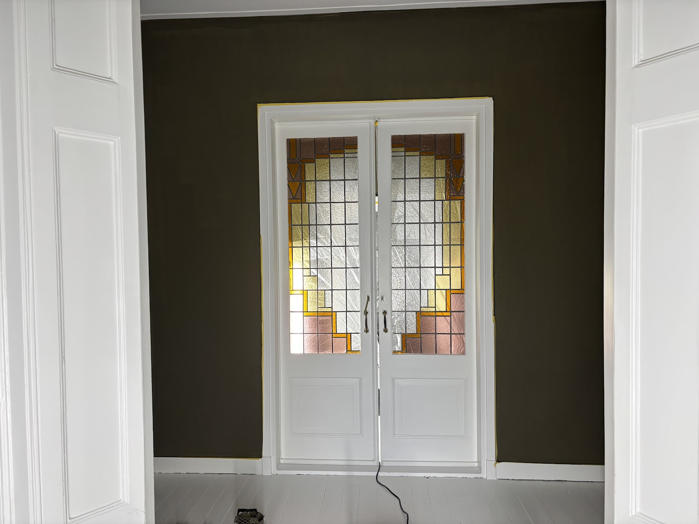
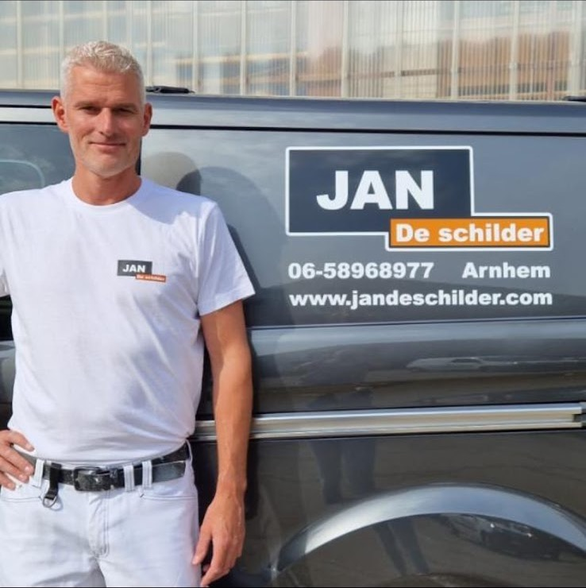
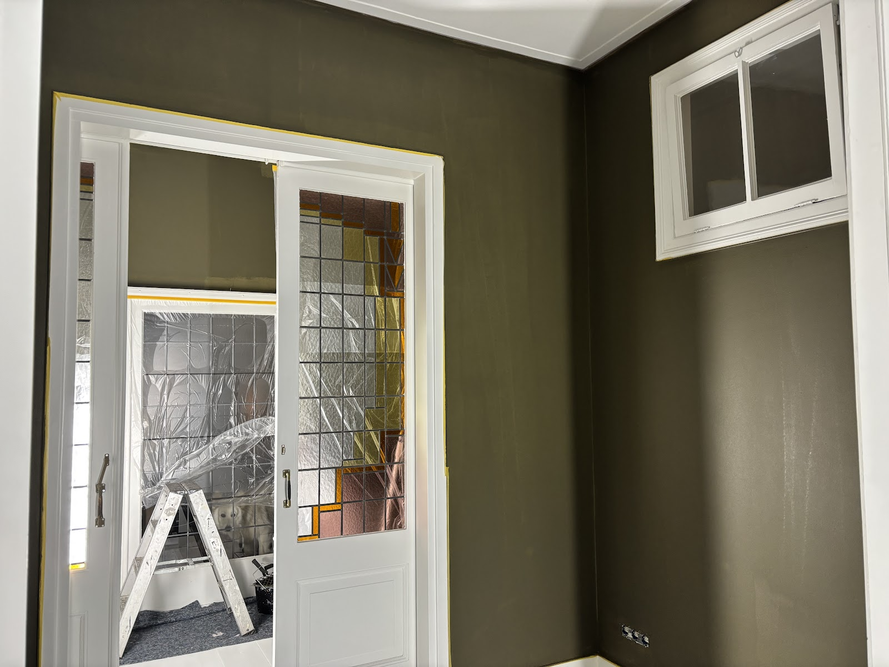
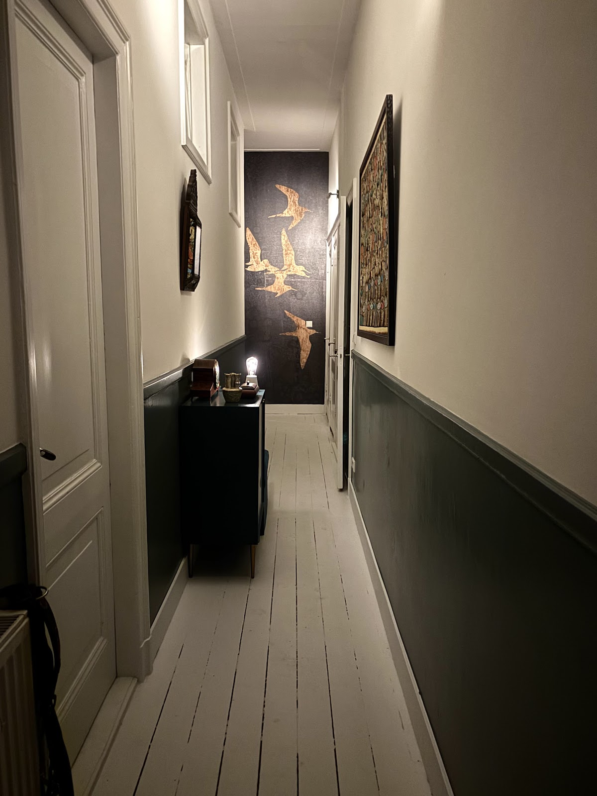
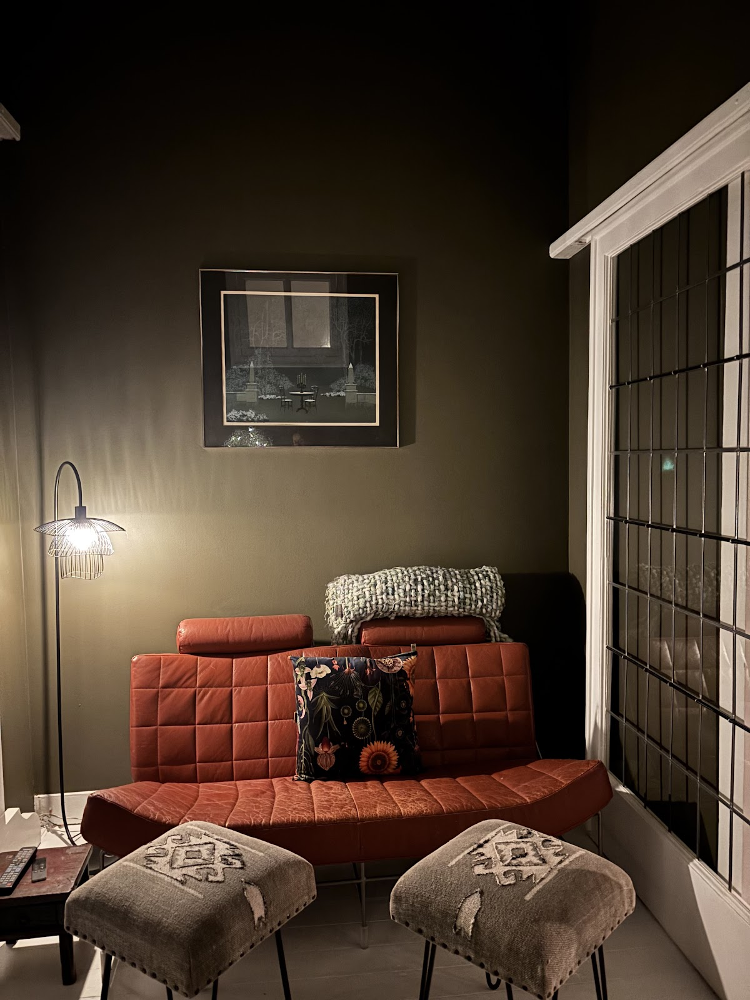
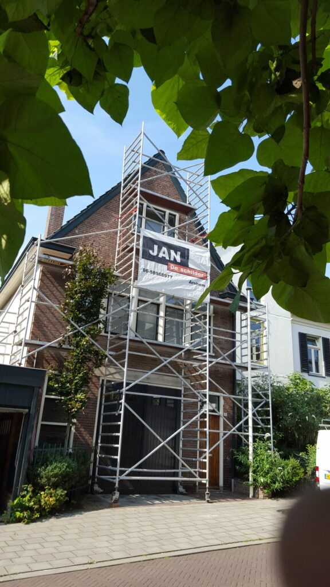
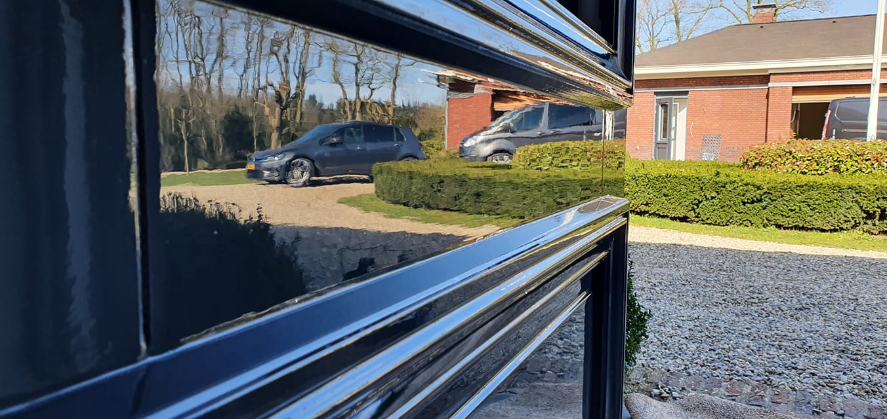

Schilderen
Binnen en buiten goed onderhouden schilderwerk, na een persoonlijke inspectie.
- Binnenschilderwerk
- Buitenschilderwerk
- Renovatie
- Houtrotherstel
- Monumentaal schilderwerk
- Nieuwbouw schilderwerk
Alle schilderwerk in en rond uw woning of bedrijfspand, van een binnendeur tot een complete gevel. U heeft één aanspreekpunt: Jan zelf, schilder sinds 1997.


Sinds 1997 werk ik in de schildersbranche. In 2012 ben ik voor mezelf begonnen, en dat is uitgegroeid tot een schildersbedrijf met veel tevreden klanten. Ik werk vooral in en rond Arnhem.
Uw woning of bedrijfspand is een kostbaar bezit. Goed onderhouden schilderwerk houdt het mooi en beschermt het. Daarom kom ik eerst bij u langs om de conditie van het schilderwerk te bekijken.
U weet vooraf wat er gebeurt en wanneer.
U heeft contact met Jan zelf.
In het vak sinds 1997, binnen en buiten.
Donkere wanden, strak wit lakwerk, steigers aan de gevel. Een greep uit klussen in en rond Arnhem.





Van schilderwerk tot behang en glas: alles in en rond uw woning of bedrijfspand. Twijfelt u of uw klus erbij hoort? Bel gerust even.
Binnen en buiten goed onderhouden schilderwerk, na een persoonlijke inspectie.
Behang als decoratie of als alternatief voor een kleur op de wand, in vele materialen.
Glas vervangen na ruitbreuk of uw woning beter isoleren. We bespreken de mogelijkheden samen.
Vertel kort wat er moet gebeuren. We plannen een afspraak bij u thuis of op de zaak.
Hij controleert de conditie van het schilderwerk en denkt met u mee.
Een passende offerte, geheel vrijblijvend. Daarna beslist u.
5 sterren uit 62 Google-reviews
“Jan is een echte vakman die zijn werk tot in de puntjes verstaat. Hij werkt zorgvuldig, denkt mee en levert kwaliteit af. De communicatie verloopt prettig en afspraken worden altijd nagekomen. Het eindresultaat ziet er strak uit en getuigt van veel ervaring en oog voor detail. …”
“Binnen schilderwerk door Jan laten doen. Wat ik als eerste ontzettend prettig vind is dat Jan ook op tijd komt. Sleutels afgegeven en bij thuiskomst een schone woning. Na een week al het binnenwerk klaar, alles zoals afgesproken gedaan, en zelfs iets meer door extra werk te leveren. Fijn man in omgang erg vriendelijk.”
“… Geen woord teveel gezegd vorige keer. Ook het schilderwerk is fantastisch. Superstrak in de lak, snel, schoon, service... wederom alles erop en eraan met veel gezelligheid. …”
“Jan is een echte professional. Hij heeft in een paar dagen tijd beide kanten van ons huis onder handen genomen en heel goed werk verricht! Het is een zeer aardige man, prettig in de communicatie en fijn in de omgang. Aanrader!”
“Jan is al meer dan 20 jaar mijn vaste schilder. Hij levert niet alleen mooi schilderwerk af, maar zal als er iets niet naar je zin is, altijd terugkomen voor om dit te herstellen. …”
Bel of mail voor een afspraak. U krijgt daarna een passende, vrijblijvende offerte.
06 58968977